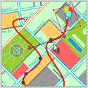

|
|
| Tool creates SVG animations for Windows Mobile devices |
Jul. 26, 2005
Ikivo AB has released a new version of its mobile content authoring software for creating scalable vector graphic (SVG) animations for Windows Mobile devices. New features in Ikivo Animator 1.1 include opacity and gradient support and extensive preview profiles, according to the company.
(Click here for an animated set of screen shots)
Ikivo says that its Animator package is based on the Mobile SVG standard developed by the World Wide Web (W3) Consortium. The standard defines an "SVG Tiny" profile for smartphone devices and an "SVG Basic" profile for PDAs.
Mobile phone applications for interactive SVG Tiny animations might include infotainment, financial services, maps, games, and more, according to Ikivo.
Animator enables designers to move, scale, rotate, and change the attributes of SVG Tiny content over time, as well as to embed interactivity, according to the company. While developing content, the designer is able to preview the results for selected target devices.
The package integrates smoothly with, and is complementary to, Adobe Illustrator CS and Adobe GoLive CS. Ikivo says that Illustrator CS and GoLive CS provide the additional tools needed to design the source SVG graphics, which are then converted to SVG Tiny in Animator.
By producing a "richer graphical experience," Ikivo Animator can help designers and developers tap create "graphically compelling," high-value business and consumer mobile services, according to the company. Examples of such services might include news feeds with visual content and sophisticated location-based services.
SVG Player
SVG Tiny content created with Animator is played on the target mobile device using Ikivo's SVG Player software, which is supplied as ANSI C source code. According to Ikivo, the "compact, efficient, and flexible mobile SVG [Player] software product" . . . makes it possible to send, receive, view and handle mobile SVG on mobile devices." Currently, SVG Player supports Windows Mobile, Symbian, Linux, and a variety of real-time operating systems, Ikivo says.
SVG Tiny content created with Animator can be played using Ikivo's SVG Player software, which is distributed as ANSI C source code that targets Windows Mobile, Linux, Symbian, and proprietary real-time OSes. Ikivo describes the Player as compact, efficient, and flexible, and says it supports sending, receiving, and viewing SVG content.
Animator availability
Ikivo's Animator tool, which supports content development in both Windows and Macintosh host environments, is available immediately through the company's online store and Adobe's online store for $349. A free 15-day trial version is also available for download from Ikivo's website.
Related stories:
 |
|
|
|
|
|
|
|
 Use of this site is governed by our
Terms of Use
and Privacy Policy.
Except where otherwise specified, the contents of this site are copyright © 1999-2005
Ziff Davis Publishing Holdings Inc.
All Rights Reserved. Reproduction in whole or in part without permission is prohibited. Windows is a trademark or registered trademark of Microsoft Corporation in the United States and/or other countries and is used by WindowsForDevices under license from owner. All other marks are the property of their respective owners. WindowsForDevices is an independent publication not affiliated with Microsoft Corporation.
Use of this site is governed by our
Terms of Use
and Privacy Policy.
Except where otherwise specified, the contents of this site are copyright © 1999-2005
Ziff Davis Publishing Holdings Inc.
All Rights Reserved. Reproduction in whole or in part without permission is prohibited. Windows is a trademark or registered trademark of Microsoft Corporation in the United States and/or other countries and is used by WindowsForDevices under license from owner. All other marks are the property of their respective owners. WindowsForDevices is an independent publication not affiliated with Microsoft Corporation. 2005
market survey
2005
market survey


 news feed
news feed